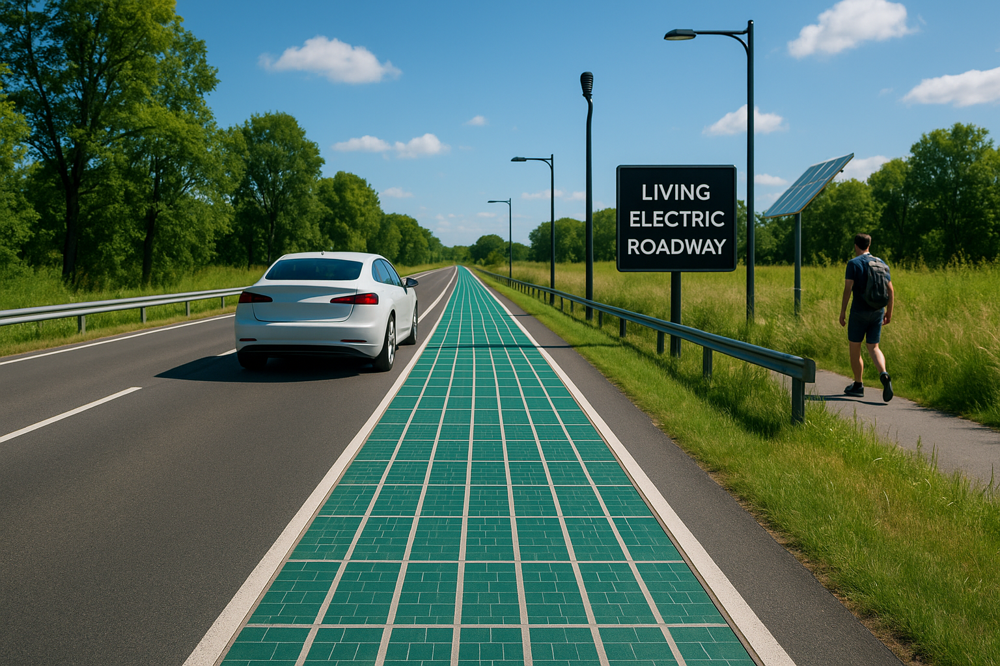
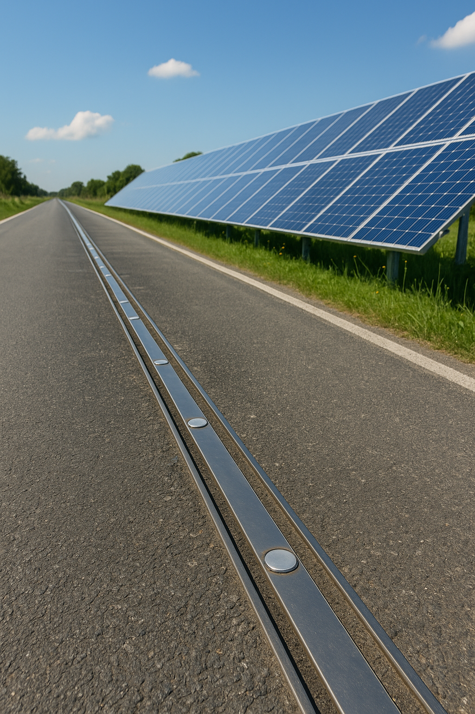
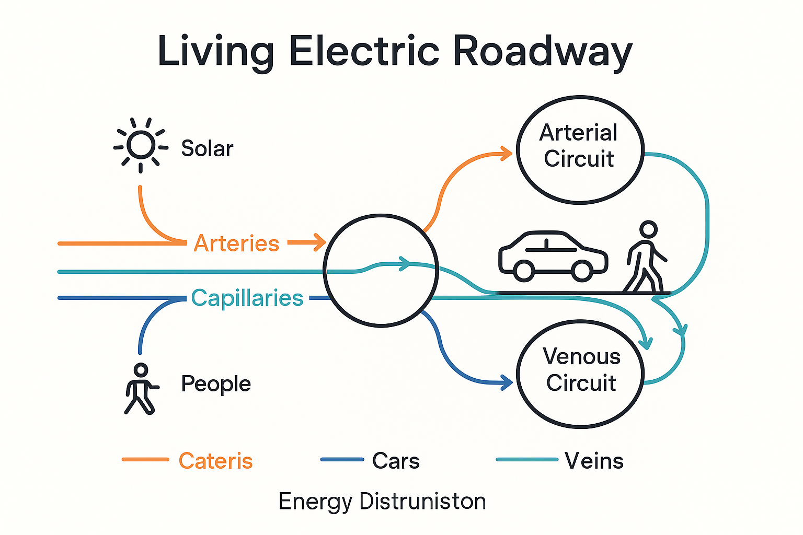

One of my favourite things to do is ideate and imagine bold solutions to real-world problems. When I am in nature or drawing I come up will ideas for things that I observe in real life and stay in my mind waiting for... ideation.
If the idea sparks something in you, feel free to build on it — I’d genuinely love to see it come to life. I just ask that you bring me along for the journey and consider collaborating. Projects like these make me feel truly alive - they give purpose to design and turn creativity into something deeply meaningful.
Imagine the following... It’s a warm afternoon. People stroll down the park-side pathway, cyclists glide by, and a steady stream of electric cars hum across the nearby road. All of them - unknowingly - are part of a dynamic, intelligent energy ecosystem beneath their feet.
 Suddenly, a power outage occurs in a nearby neighbourhood. But instead of a blackout, the smart road responds like a living organism.
Just like blood redirects to an injured area, the ElectroFlow Circuit reroutes stored energy through its self-regulating microgrid. The system pulls reserve power from three key sources:
- Kinetic energy generated by vehicles and pedestrian movement (via pressure-sensitive tiles and road coils).
- Solar panels embedded in road dividers and rooftops.
- Residual charge from EVs decelerating or braking.
It also only uses an certain amount of energy that doesnt disappear because it gets replaced... its a closed live circuit.
Meanwhile, the user-facing experience (via app or public display panels) shows:
- Live energy levels of each road segment.
- Areas currently "donating" or "receiving" power.
- Suggestions for energy-saving routes and optimal times for EV charging.
The road even communicates with emergency services, ensuring that vital energy routes are prioritized — just like arteries protecting the heart.
To the average citizen? Everything appears calm, efficient, and uninterrupted. To the designers, engineers, and UX minds behind it? It’s the future of civic infrastructure as a living system.
